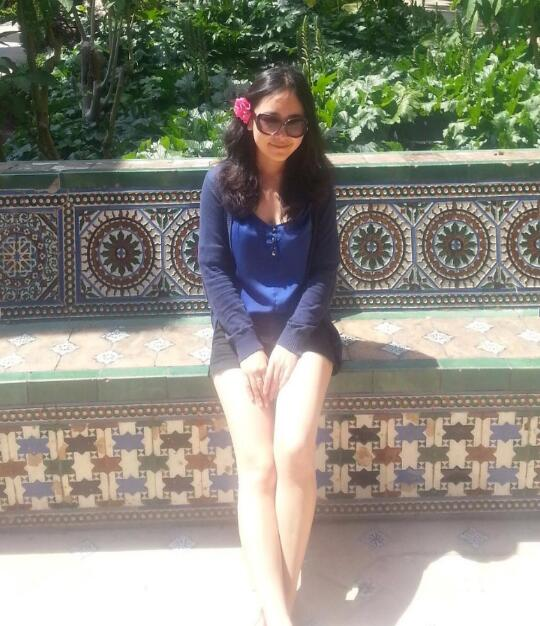
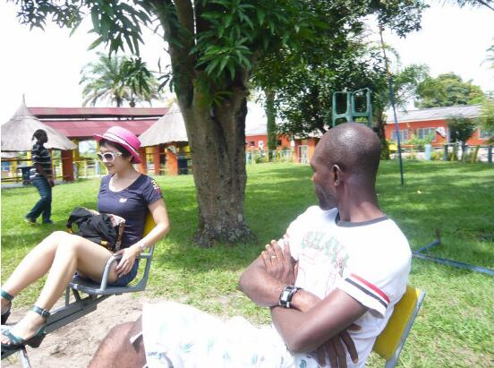
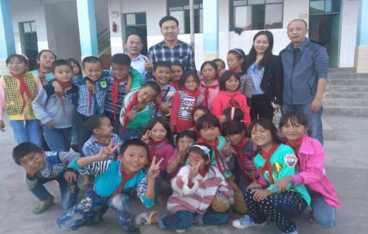

蒲晞
2008年从北京外国语大学毕业后签约中国水电第二工程局，前往刚果民主共和国首都金沙萨常驻，任法语翻译。2010年开始在中兴通讯于金沙萨的市场部门工作。2012年开始西班牙游学生活。2014年7月加入美丽中国，支教于云南省临沧市云县大寨镇新合村新合完小。
毕业多年，职业道路已经全然铺开，却半途戛然而止，加入支教项目，展开了另一条全然不同的人生体验。到底是一时冲动，厌倦了西装高跟鞋的生活？还是深思熟虑，有了完善的准备和长远的打算？一起看看她的故事。
一个游历世界的法语翻译的故事
“顺从自己的内心，走好当下的路，比什么都重要。”——蒲晞
我小时候是个留守儿童。家里贫困，为了支付我的学习费用，父母选择了南下打工。他们希望我可以上大学。所有的人都在告诉我父母为了我牺牲了很多，这让我有深深地负罪感，当时的我认为自己是家里贫困的原因，常常会想，如果没有我，父母一定更加幸福。

幸运的是，我一路学习都还不错，考上了不错的大学，毕业也有了收入不错的工作，也凭借自己的努力大大改善了家里的生活。我们一家成了周围人羡慕的对象，我也成为了邻居们教育孩子的榜样。开心得意愈加自信的同时，童年那个自卑不快乐背负着沉重负罪感的我总是三不五时打开黑暗记忆的小屋跳出来戏弄现在的我一番。
现在的我当然懂得这不是我的错，更不是我父母的错。那么是我出身的错么？人不是不应该因为出身的不同而受到区别对待的吗？可实际上，我们就是得到了不一样的对待。我觉得这并不对，但却好似是无法改变。大家总是说，事情嘛就是这样，虽然不对，但是慢慢地你就会接受了。我无话可说，但内心深处藏着一个不肯妥协的我。我开始关注境遇跟我类似的孩子们。每每看到社会新闻里那些无助的孩子们，我总会想起小时候的我。

去年春天的时候我正在巴塞罗那学语言，在微博上了解到美丽中国，顿时有种在合适的时间遇到合适的人的那种感觉：5年前的我在为改善家里的居住条件而努力，2年前的我在为自己的西班牙梦而努力，而现在，不正好是为那些有着跟我类似童年的孩子们做些什么的时候了么 ? 美丽中国所期望的“让所有的中国孩子，无论出身，都能获得同等的优质教育”也是我所期望的。
有朋友笑说我的经历就是名副其实的“教育改变命运”，的确如此。教育，在目前来说，是我唯一能够看到的最有效改变命运的机会。我一下子就沸腾了。我告诉我的每一个朋友，我回国要去申请做美丽中国的支教老师。一些朋友以为我在开玩笑，但更多的朋友表示十分支持与敬佩，还纷纷表示，如果成行了一定会去看我或者提供必要的物质上的支持。
现在我在云南的生活与一般的乡村教师并无太大的差别。每天6点半到7点起床，开始一天的工作。上课，改作业，同时思考如何可以和学生一起变的更好，如何改变我们所说的教育不均等。周末常常与美丽中国的队友们相聚，聊的大多也是学生，教育。有时候，也会想想自己以后到底应该去做什么。

我和队友最近正在开展一个歌路营一千零一夜睡前故事项目。通过每晚播放一个15分钟左右的由专业人士录制的适合小学生的故事来拓展学生的视野，提高他们对语言的感悟，以及更重要的，接触点有趣的东西。
我认为比起取得优异的考试成绩，孩子们心理健康的成长才是更重要的。我希望每个孩子都可以成为一个正直的，健康的，快乐的，自信的，有希望的人，不论出身。
对于未来，我一点都不担忧。我相信路是走出来的，我也相信这两年对我将是无比宝贵和充实的两年，它将让我终身受益，就像我之前的每一段经历。顺从自己的内心，走好当下的路，比什么都重要。 美丽中国项目老师们或许有着相似的际遇、相似的故事，却来自不同的人生。因为内心对教育的一份渴望，因为对乡村孩子的一份惦念，他们选择放弃现在的繁华与辉煌，来到他们身边，为偏远地区的孩子提供更好的教育，成为支教老师，守护他们的梦想，照亮他们前行的路。 这世界，不是每个人都有机会做自己想做的事情，但是我们可以尽量去做那些正确的事情。 纵使不能抵挡黑夜的来临，我们也要站在星空下仰望光明。
美丽中国项目老师们或许有着相似的际遇、相似的故事，却来自不同的人生。因为内心对教育的一份渴望，因为对乡村孩子的一份惦念，他们选择放弃现在的繁华与辉煌，来到他们身边，为偏远地区的孩子提供更好的教育，成为支教老师，守护他们的梦想，照亮他们前行的路。
这世界，不是每个人都有机会做自己想做的事情，但是我们可以尽量去做那些正确的事情。
纵使不能抵挡黑夜的来临，我们也要站在星空下仰望光明。